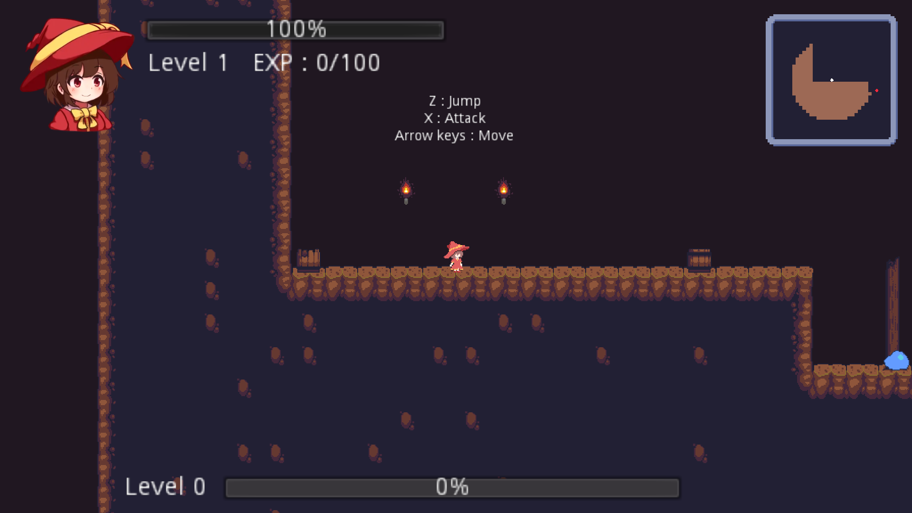
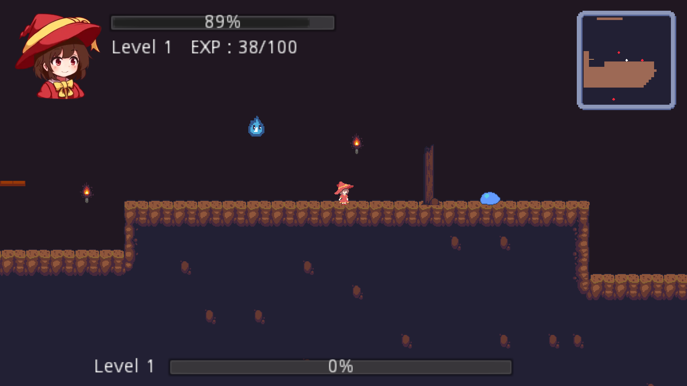
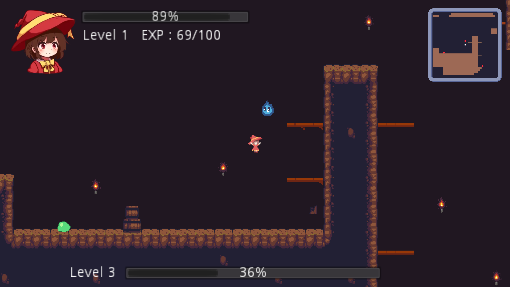
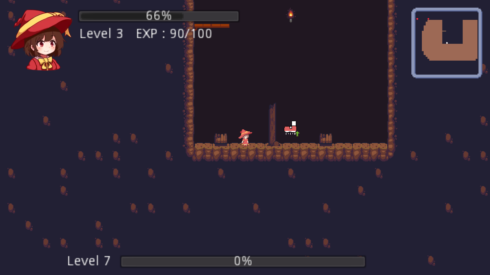
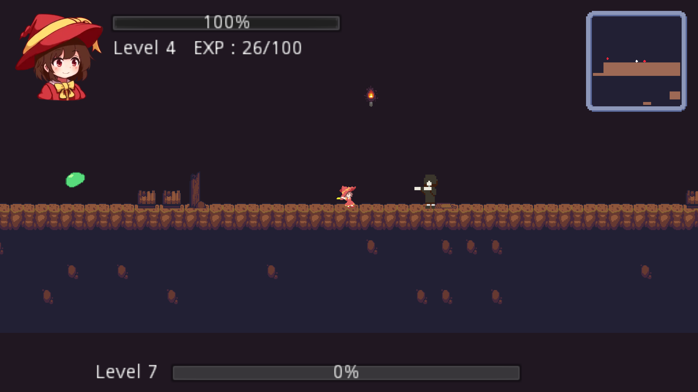
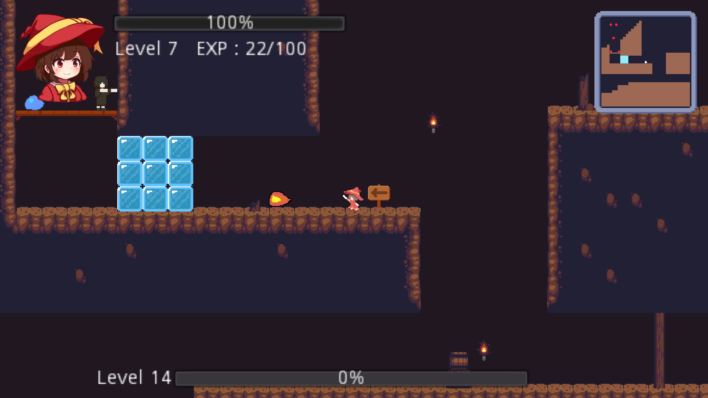

Legendary Swordsmage
You play as Atsuko as she exploring a cave in order to find the legendary golden orb. There are monsters in the cave, so her adventure won't be so easy...
Legendary Swordsmage is a platforming game that is built using Godot Engine and using gscript. It is developed as a prototype.
As a team project, I was responsible of making enemy behavorial patterns, design the level, and some player moveset.
Creating the level involving enviroment such as terrain, obstacles, and powerup that the player will use.
The enemy behavior will chase the player is close enough to the enemy, with the exception of slime.
Player can jump, attack, and move when started. With powerup, player can double jump and shoot a fireball.
     